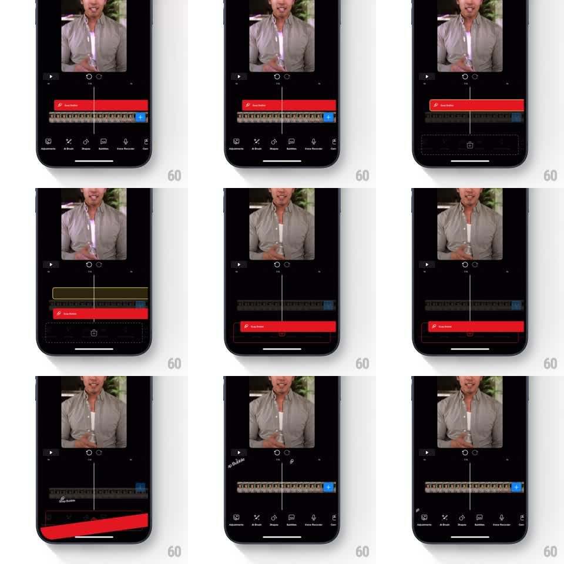

Media
Frame-by-frame

Rebuild this interaction 1:1: Riveo's drag-to-delete for a timeline style track - dragging the track downward pushes the bottom toolbar away to reveal a delete zone, the track tilts as it is pulled, and releasing removes it as the timeline collapses back.

Rebuild this interaction 1:1: Riveo's drag-to-delete for a timeline style track - dragging the track downward pushes the bottom toolbar away to reveal a delete zone, the track tilts as it is pulled, and releasing removes it as the timeline collapses back.
## Integration
Integration: stack-agnostic spec - springs given as stiffness/damping, timed motions as duration + curve; map every value to your framework and animation library of choice.
## Scene
Riveo's dark editor: video preview up top, transport controls, and a timeline holding a red style track ("Soap Bubble") above the clip thumbnails, with a bottom toolbar (Adjustments, AI Brush, Shapes, Subtitles, Voice Recorder, Cut). Long-pressing the style track lifts it; dragging it down pushes the toolbar aside to expose a delete drop zone at the bottom.
## Motion spec
Pattern: drag-to-delete with toolbar displacement, gesture-driven.
- Long-press lifts the track: it scales up slightly (1.03x), gains a shadow, and detaches from the timeline (150ms).
- Dragging down moves the track 1:1; as it passes the timeline's lower edge, the bottom toolbar slides down proportionally, revealing a dashed delete zone with a trash icon behind it.
- The dragged track tilts (rotation grows with drag distance, up to 8 degrees) and the delete zone highlights when the track overlaps it.
- Release on the zone: the track slides into it and shrinks away (250ms, ease-in), the toolbar springs back up (spring stiffness 350 damping 24), and the timeline collapses the empty row with a smooth height change (300ms).
- Release anywhere else: the track flies back to its slot (spring stiffness 380 damping 24) and the toolbar returns.
## Calibration
- Toolbar displacement tracks the drag 1:1 - a physical push, not a triggered animation.
- The tilt direction follows the drag's horizontal offset, like a card held by one corner.
## Reduced motion
Track fades out on drop; no tilt.
## Don't miss
- The delete zone is only visible while dragging - the toolbar fully covers it at rest.
- The timeline's remaining content stays pinned while the row collapses.